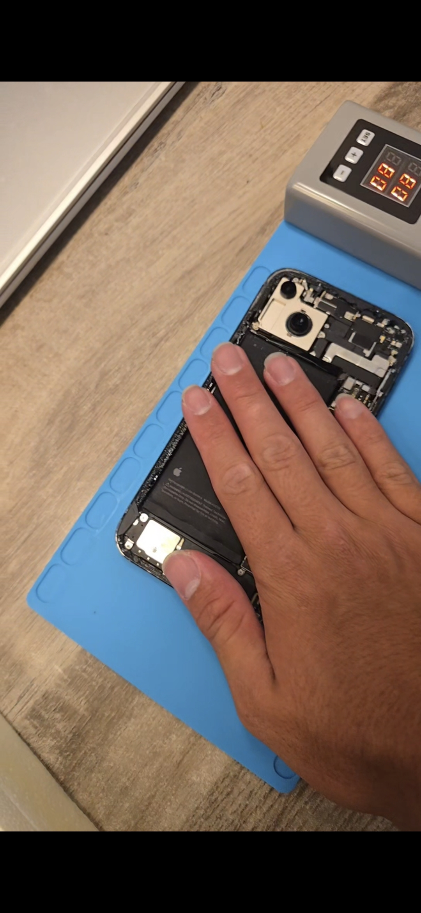
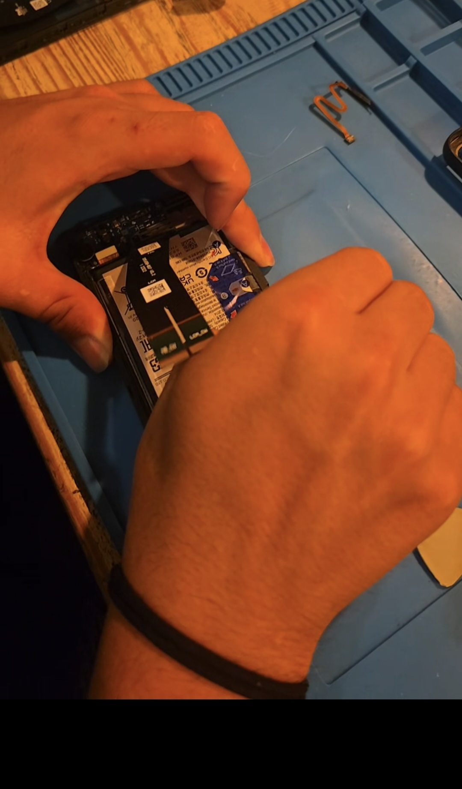
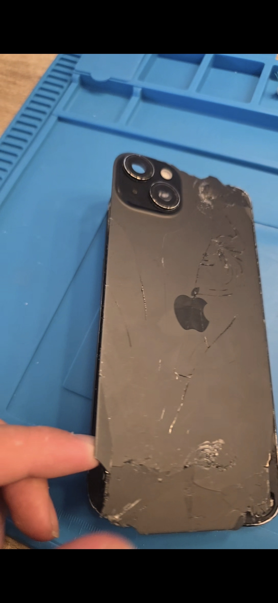
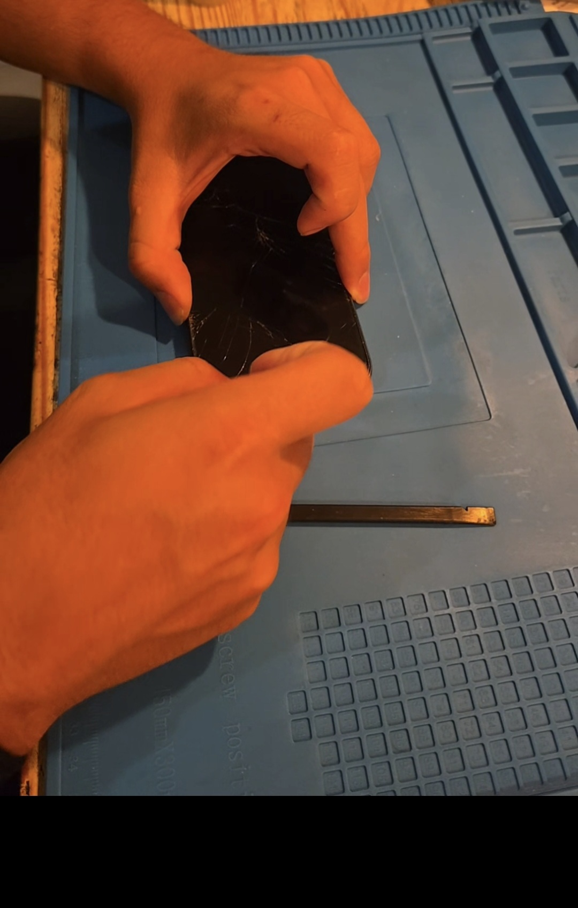
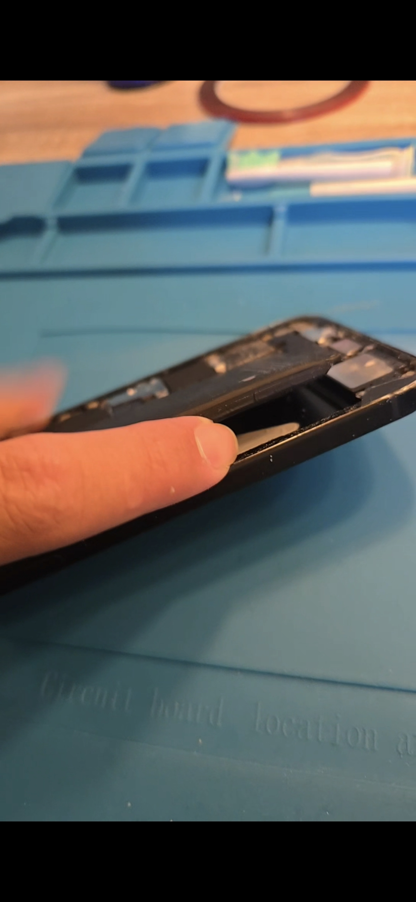
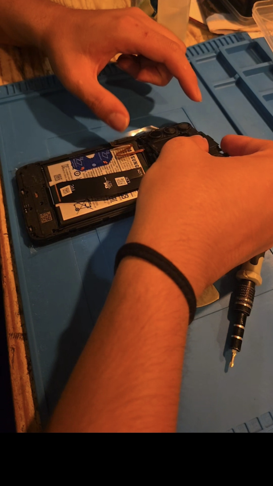
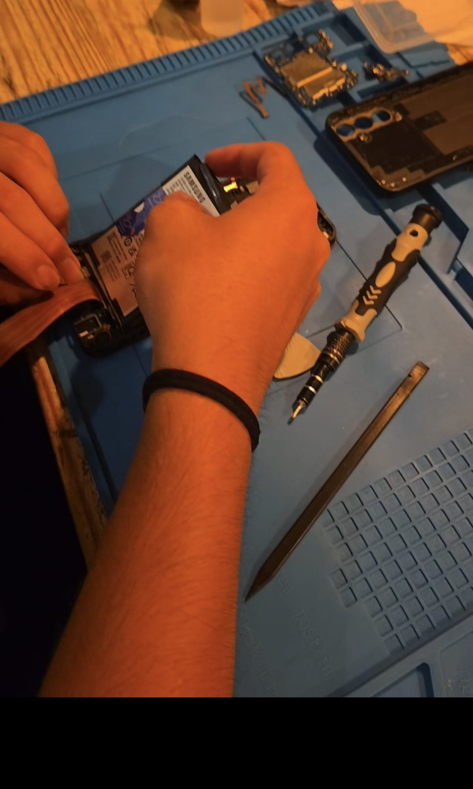

Kapot apparaat? C-Fix repareert het.
Professionele reparaties van smartphones, tablets, laptops en PC's. Vakkundig, snel en tegen een eerlijke prijs. Geen kosten als het niet lukt.



Reparatie waar je op kunt vertrouwen
Bij C-Fix combineer ik vakmanschap met persoonlijke aandacht. Dit is wat ons anders maakt:
No Fix, No Pay
Lukt de reparatie niet? Dan betaal je niets. Zo simpel is het. Je loopt dus nooit risico als je jouw apparaat bij ons brengt.
Gecertificeerd vakmanschap
Met een afgeronde MBO 2 ICT Support en momenteel in het examenjaar van MBO 4 Expert IT Systems & Devices ben ik altijd op de hoogte van de nieuwste techniek.
Eerlijk advies
Vooraf duidelijkheid over mogelijkheden, kosten en de beste oplossing. Geen verrassingen achteraf. Transparant en open.
Snelle service
De meeste reparaties worden dezelfde dag of binnen 24 uur uitgevoerd. Zo heb je jouw apparaat snel weer terug.
Scherpe prijzen
Kwalitatieve reparaties hoeven niet duur te zijn. Bij C-Fix betaal je een eerlijke prijs zonder verborgen kosten.
Persoonlijke aanpak
Geen groot bedrijf met lange wachttijden, maar persoonlijke service. Ik denk graag met je mee over de beste oplossing.
Wat kunnen we voor je repareren?
Van een kapot scherm tot een trage laptop. C-Fix helpt je met alle apparaten.
Smartphone reparatie
Schermvervanging, batterij, oplaadpoort, camera, speaker en meer. Alle merken.
Tablet reparatie
iPad, Samsung Tab en meer. Scherm, batterij, aansluiting of software problemen.
Laptop reparatie
Scherm, toetsenbord, scharnier, SSD upgrade, fan reiniging en meer.
PC reparatie
Hardware diagnose, onderdelen vervangen, Windows installatie, opschonen en optimaliseren.
Software support
Virus verwijderen, data recovery, OS installatie, drivers en configuratie.
Waterschade
Snel handelen is belangrijk. Breng je apparaat zo snel mogelijk langs voor de beste kans op herstel.
Hoe werkt het?
In vier simpele stappen is jouw apparaat weer als nieuw.
Neem contact op
Maak een afspraak via het formulier of bel ons direct. Vertel wat er aan de hand is.
Diagnose
We bekijken jouw apparaat en stellen een diagnose. Je krijgt vooraf een eerlijke prijsindicatie.
Reparatie
Na akkoord gaan we direct aan de slag. De meeste reparaties zijn dezelfde dag klaar.
Ophalen
Je apparaat is gerepareerd en getest. Je betaalt pas als alles naar wens werkt.
Een kijkje in de werkplaats
Echte foto's van echte reparaties. Vakmanschap dat je kunt zien.




Waar zijn we actief?
C-Fix is actief in Nijkerk en de wijde omgeving. Bekijk hieronder ons servicegebied.
📍 Servicegebied
Plaatsen in ons servicegebied: